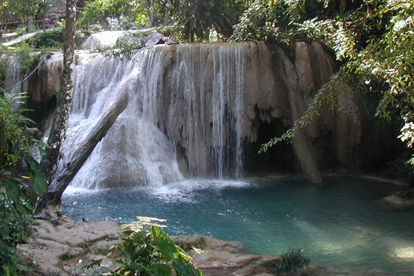

Simple Crossfade Waterfalls Slideshow
-

Agua Azul, Mexico
-

Burney Falls, California, USA
-

Cachoeira do Pacheco, Venezuela
-
Deer Leap Falls, Pennsylvania, USA
-
Fulmer Falls, Pennsylvania, USA
-
Hopetoun Falls, Victoria, Australia
-
Jonathan's Run, Pennsylvania, USA
-
Kjosfossen, Norway
-
Krimml Falls, Salzburgerland, Austria
-
Madhabkunda Falls, Bangladesh
-
Manavgat Waterfall, Turkey
-
Niagara Falls, USA and Canada
-
Nymph Falls, British Columbia, Canada